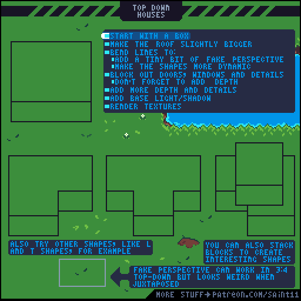
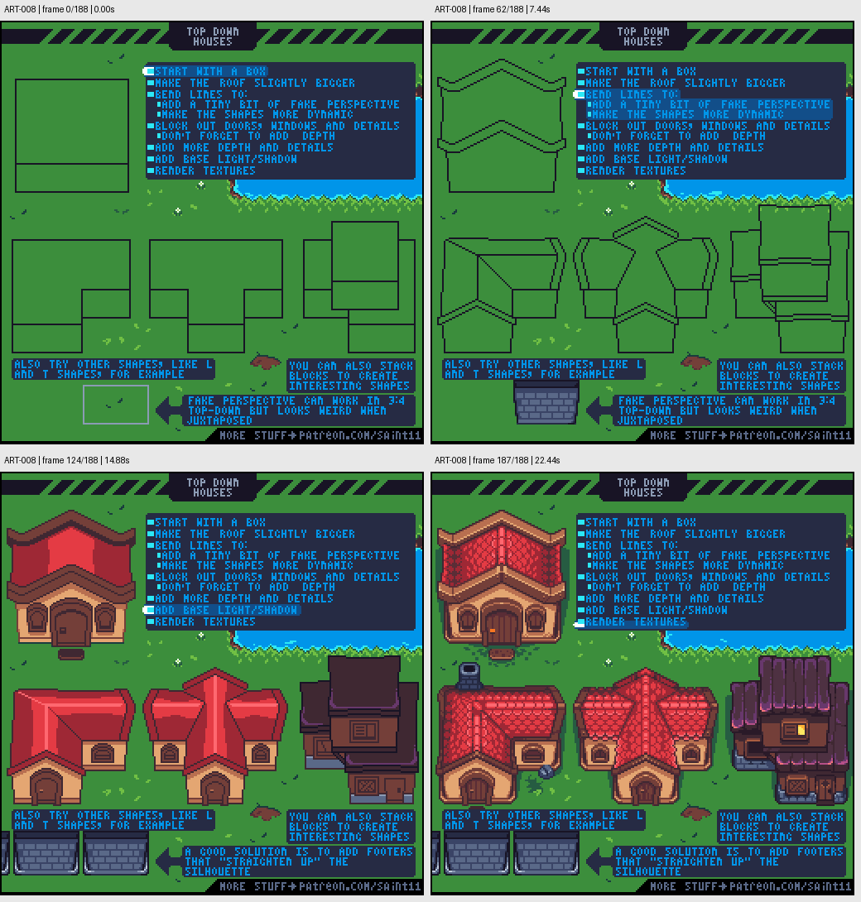

教程库抽样渲染 · ART-008
ART-008 · 俯视斜视角房屋：从体块到屋顶材质
从简单盒子建立屋顶和墙体，在统一视角下添加门窗、深度、光影与纹理。
使用前先读
适用层级： 进阶。前置： ART-002、ART-003、ART-007。
本篇依据原图中的主要说明和示例编写中文讲解，保留原始英文动态图；不是逐字全文OCR。原作者的经验性建议不自动等于所有项目的硬性规则。练习、验收与适用边界是整理者补充。
学习目标
- 按体块顺序绘制房屋
- 识别伪透视与正俯视的边界
- 用多种组合体块制作建筑变体
原始图文教程

图1：Pedro Medeiros / Saint11 原始GIF，512×512，189帧，总时长22.68秒。原文件未改像素或重编码。部分阅读器只显示首帧，请结合下面的静态图和说明。

图2：整理者从原GIF按时间抽取的静态辅助图，阅读顺序为左上→右上→左下→右下。只选取四个时间点，并不代表完整动画或所有中间步骤；原始帧未缩放，标签加在图外。
图示读法
这是逐步展开的GIF：首帧只有体块，后续出现屋顶线、门窗、基础颜色与纹理。关键帧表按原时间排列，可看到同一流程如何应用在矩形、折角和叠层建筑上。
关键概念
原图展示的是常见3/4俯视斜视角风格：能看到屋顶与正面墙。它并非严格正俯视投影。教程也明确指出伪透视在平铺时可能显得奇怪。
根据原图整理的步骤
-
先画盒状体块，划分屋顶与墙体；让屋顶略大于墙身，表达屋檐。
-
根据项目视角轻微弯折线条，使造型更活泼；不要每栋房子自行改变倾角。原图这种伪透视需要与整体场景兼容。
-
先块出门窗和细节的位置，并用厚度、门框与屋檐明确结构深度。
-
加入基本受光和阴影之后，再画瓦片、木纹或砖缝；在纹理前应已能看出房屋。
-
尝试L形、T形或叠放体块，做同一家族建筑。遇到平铺轮廓不顺的问题，图末建议用屋角结构把外轮廓重新理直。
实作练习（整理者补充）
整理者练习：按同一视角画64×64单间农舍、L形农舍和附带小仓房的农舍。先共用一张结构线规则表，固定屋檐深度与主光方向；完成后放进同一个格子场景检查尺度。
验收清单（整理者补充）
- [ ] 三栋建筑的可见屋顶/墙面比例一致
- [ ] 屋檐比墙体略外伸且投影合理
- [ ] 加纹理之前体块已经可读
- [ ] 与邻接建筑组合时没有透视冲突
适用边界与常见误区（整理者补充）
不能将本例的弯曲屋顶线直接套进要求严格正面俯视的资产规范。先确认项目投影，再决定保留哪些造型技巧。
来源与授权